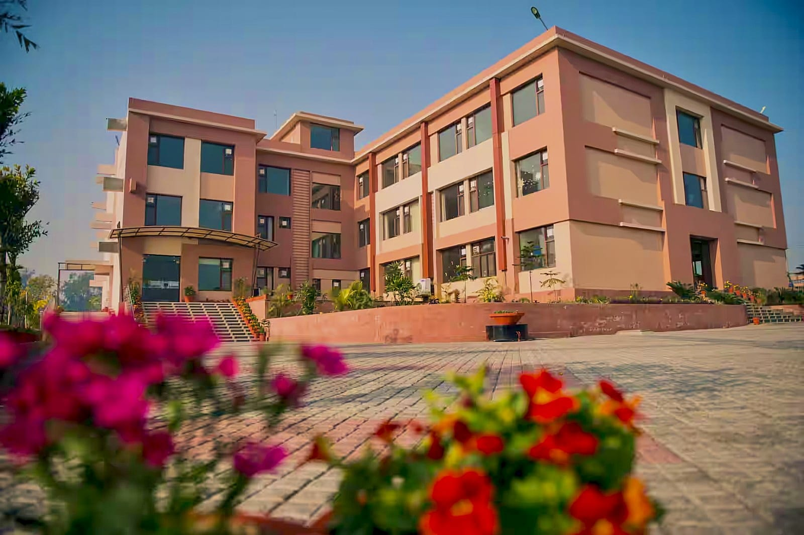
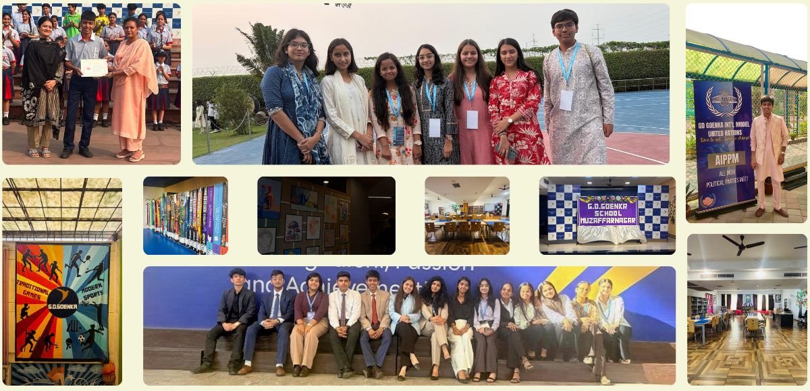

GDGMUN COLLOQUY '26 — where diplomacy inspires leadership and ideas shape tomorrow.

G.D. Goenka School, MuzaffarnagarGDGMUN COLLOQUY '26 is designed as a sanctuary for dialogue. We invite student delegates from across the region to engage in high-stakes negotiation, fostering a generation that values the nuance of diplomacy over the simplicity of conflict.
Guided by a philosophy of restraint, precision, and craft, the First Annual Session addresses some of the most consequential issues of the decade — from water security to the future of democratic institutions.
Deliberating Strengthening International Cooperation to Combat Transitional Organized Crime.
Deliberation On the Future of The National Testing Agency (NTA) And Reforms in Indian National Entrance Examination System.
Deliberating Upon Water Security, The Weaponization of Water Resources and Their Implications for International Peace and Security.
Double DelegationDeliberating On the Urgent Need to Strengthen the Protection of Human Rights in Armed Conflicts and To Establish Effective Mechanisms for Ensuring Full Accountability for Violation of International Humanitarian Law.
Effective Implementation of International Pandemic Agreements, focusing on global preparedness, equality and pathogen access.
Addressing Political Defections and The Practice of Horse-Trading to Safeguard Democratic Integrity and Preserve the Integrity of The Indian Parliamentary System.
Live reporting, editorial illustration, and press coverage in committee proceedings throughout the conference.
Committees built for genuine deliberation rather than performance.
Chairs drawn from the top MUN circuits of the country.
An in-house Press Corps producing a printed conference publication.
Every material — from placards to specialty papers — designed with intent.

Any student who is enrolled at a recognized secondary institution may register, individually or as part of a school delegation.
₹2200 per delegation (NON-REFUNDABLE).
No. Committees such as ECOSOC and WHO are curated for first-time delegates, while UNSC and DISEC suit experienced diplomats.
Accommodation may be arranged upon special request, subject to availability. Please note that submitting a request does not guarantee accommodation, and requests may be declined based on capacity and logistical constraints.
Yes. If you are unable to attend one day due to your personal availability, you will still be considered an official participant. However, no refund or adjustment will be provided for the missed day. As long as you are registered, you will remain eligible to receive a participation certificate despite missing one day of the event.
Day 1: Western Formals.
Day 2: Indian Formals.
GDGMUN COLLOQUY '26 is hosted on the campus of G.D. Goenka School, Muzaffarnagar. Delegations travelling from outside the city can use the map below to plan their route.
Submit an expression of interest and the Secretariat will respond within two working days with the registration dossier and payment instructions.
Click below to fill out our official registration form. It only takes a couple of minutes.
Fill Registration Form